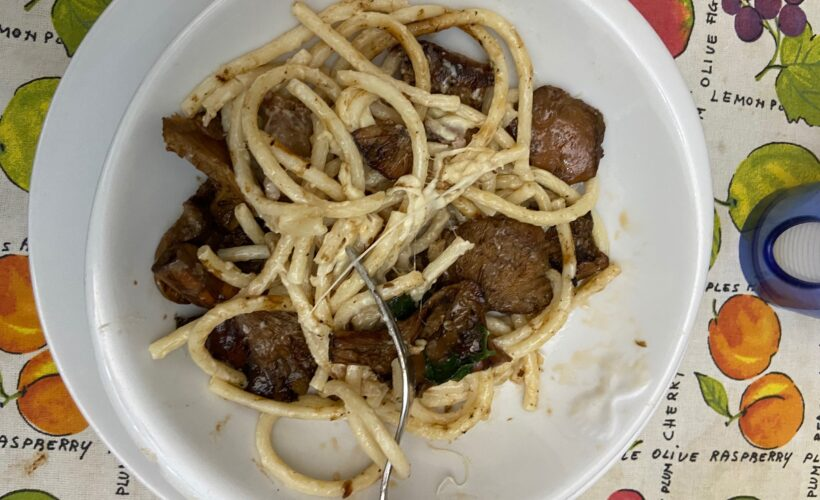

Régime spécial intolérance et hypersensibilité alimentaires Crash Bandicoot 4 : l'Europe mise à la diète pour la version physique. C'est l'une des grosses sorties de cette fin de semaine mais bizarrement, le jeu qui devait être disponible à la fois en version physique et en version digitale un peu partout dans le monde se retrouve uniquement en version dématérialisée en Europe.
Maréchal — Wikipédia En science de l'information, une autorité (ou notice d'autorité ou forme d'autorité) sert à identifier sans ambiguïté des personnes ou d'autres concepts, et à faciliter la recherche dans les catalogues de bibliothèques.. Une autorité est composée au minimum d'une forme retenue, « faisant autorité », d'où son nom calqué sur l'expression anglaise d'origine, « authority control
Régime Cétogène (Keto Diet) : Définition, Menu, 9 Recettes ... La diète cetogene va flinguer votre foie, votre vésicule, votre cerveau, bref ça va vous tuer. Ça marche pour très peu de monde qui avait sûrement maltraiter leur corps par le passé, donc ils pensent que cetogene est la solution. Mais un régime paléo ou méditerranéen aurait ete pour eux bien plus bénéfique.
Diète cétogène — Wikipédia Une diète pauvre en oméga-3 pourrait affaiblir la structure et la composition des membranes des neurones, affectant ainsi la chimie du cerveau. Par ailleurs, une diète trop riche en gras ...
Les phrases de condition - Université du Québec La diète keto peut convenir à plusieurs personnes, mais elle est vraiment contraignante à adopter. Ta volonté doit être inébranlable et ta raison de le faire doit être valable (ex. épilepsie). Si tu veux être certaine de respecter la cétose et de t'assurer que c'est sain pour toi, je t'encourage à consulter un médecin ou un ...
Crash Bandicoot 4 : l'Europe mise à la diète pour la ... L'hypersensibilité est une réaction désagréable à certains aliments, on l'appelle aussi intolérance. Dans ce cas, l'ingestion d'un aliment particulier entraîne des symptômes spécifiques ...
Régime cétogène (diète KETO): définition, aliments permis ... Métier équestre. Initialement, le mareschal ou maréchal (marhskalk, en ancien francique) est un « domestique chargé de soigner les chevaux » [1], tel le fourrier.. On distingua d'abord le maréchal des logis, responsable des écuries de son unité militaire, et plus tard du logement des troupes, du maréchal-ferrant, chargé de ferrer les pieds des chevaux et autres équidés et de s ...
Diverticulite : aliments à manger et à éviter La diète cétogène, ou régime cétogène, est un régime alimentaire à très basse teneur en glucides compensé par un renfort de lipides.Elle a été mise au point après qu'on a observé que le jeûne et la cétose faisaient parfois disparaître des épilepsies sévères [1].Le gras métabolisé crée un état de cétose nutritionnelle. Non exempte de risques, elle doit être précise et ...
Régime pour la mémoire et la concentration 3. Aujourd’hui, je mange du dessert parce que je ne suis pas à la diète. Demain, si je ne suis pas à la diète, je mangerai du dessert. 4. Ce soir, nous ne faisons pas la fête parce que nous devons nous lever tôt. Mais, demain soir, nous ferons la fête, si nous ne devons pas nous lever tôt. 5.
Autorité (sciences de l'information) — Wikipédia 2) Aliments à éviter lorsque vous souffrez d'une diverticulite. Noix et graines, Grains entiers, Haricots et lentilles, Légumes comme le brocoli, le chou-fleur, les choux de Bruxelles, le chou, et d'autres légumes de la famille des crucifères,
Diète cétogène — Wikipédia
2021.04.10 16:53

Aller au contenu Afficher / masquer la barre latérale
Rechercher
Outils personnels
Non connecté Discussion Contributions Créer un compte Se connecter
Menu de navigation
Navigation
Accueil Portails thématiques Article au hasard Contact
Contribuer
Débuter sur Wikipédia Aide Communauté Modifications récentes Faire un don
Outils
Pages liées Suivi des pages liées Téléverser un fichier Pages spéciales Lien permanent Informations sur la page Citer cette page Élément Wikidata
Imprimer / exporter
Créer un livre Télécharger comme PDF Version imprimable
Dans d’autres projets
Wikimedia Commons
Dans d’autres langues
العربية বাংলা Català Čeština Dansk Deutsch Ελληνικά English Español Eesti فارسی Suomi עברית हिन्दी Hrvatski Magyar Bahasa Indonesia Italiano 日本語 Jawa Bahasa Melayu Nederlands Norsk bokmål ଓଡ଼ିଆ ਪੰਜਾਬੀ Português Română Русский Simple English Svenska Türkçe Українська Tiếng Việt 中文 粵語 Modifier les liens
Espaces de noms
Article Discussion
Variantes
Affichages
Lire Modifier Modifier le code Voir l’historique
Plus
Diète cétogène
Un article de Wikipédia, l encyclopédie libre.
La diète cétogène , ou régime cétogène , est un régime alimentaire à très basse teneur en glucides compensé par un renfort de lipides . Elle a été mise au point après qu'on a observé que le jeûne et la cétose faisaient parfois disparaître des épilepsies sévères [ 1 ] . Le gras métabolisé crée un état de cétose nutritionnelle. Non exempte de risques, elle doit être précise et, le cas échéant, réalisée après avis médical.
Utilisé depuis 1921 pour le traitement de l' épilepsie , ce régime trouve aujourd'hui d'autres applications :
en tant que traitement adjuvant dans la lutte contre le cancer [ 2 ] , [ 3 ] , associé aux chimiothérapies et radiothérapies, ou encore en thérapie associée au traitement métabolique [ 4 ] ; dans le cadre de régimes amaigrissants (s'oppose à une alimentation à base d'aliments complets d'origine végétale ). comme mode d’alimentation privilégié par certaines catégories de sportifs recherchant en particulier une meilleure endurance [ 5 ] , [ 6 ] .
L'alimentation cétogène est traditionnelle chez les Inuits [ 7 ] , des Maasaï [ 8 ] et chez certaines tribus amérindiennes [ 9 ] .
Sommaire
1 Principes 2 Utilisations 2.1 Limites 3 Effets sur la santé 3.1 Cancer 3.2 Épilepsie 3.3 Le Jeûne intermittent 3.3.1 Restrictions 3.4 Effets négatifs 4 Remarques 5 Notes et références 6 Voir aussi 6.1 Articles connexes 6.2 Liens externes 6.3 Études
Principes [ modifier | modifier le code ]
Articles détaillés : Cétogenèse , Mitochondrie#Fonctionnement et Cycle de Krebs#Dégradation des lipides .
Les différentes formes de diète cétogène prescrivent une « réduction massive de l’apport en glucides et un apport important de lipides (70 à 90% de la ration calorique totale) » [ 1 ] . La réduction des hydrates de carbone va généralement jusqu'à moins de 50 g par jour, mais certaines variantes suggèrent de réduire jusqu’à moins de 20 g d’hydrates de carbone par jour [ 10 ] . Une augmentation relative des apports de graisses et protéines compense cette réduction. Après plusieurs jours de régime, les réserves de glucose (c’est-à-dire les stocks de glycogène dans le foie et les muscles squelettiques) deviennent insuffisantes pour répondre au besoin en énergie. Des lors, le substrat énergétique principal est fourni par la dégradation des acides gras et par conséquent leur transformation en corps cétoniques . On parle ainsi de cétose.
Le Régime Atkins apparu dans les années 70 en est la forme la plus ancienne selon Kosinski et Jornayvaz [ 10 ] .
Les aliments riches en calories utilisables dans ce régime alimentaire sont, entre autres, le beurre , la crème , l' huile de noix de coco , l' huile d'olive , l' huile d'avocat , l'huile de type MCT. Les glucides, présents surtout dans le pain et les féculents , sont éliminés, la quantité de fruits est également fortement réduite.
Utilisations [ modifier | modifier le code ]
Concernant son application à l'épilepsie, ses indications chez l’enfant étant de mieux en mieux cernées, il a été utilisé davantage à partir des années 1990 , notamment dans les pays anglo-saxons et en France, avec « une efficacité reconnue dans plus de 30% des cas d’épilepsie pharmacorésistante avec crises fréquentes » et on a considéré qu'il pouvait aussi traiter certaines maladies du métabolisme énergétique [ 1 ] .
Selon ses partisans, sa mise en œuvre est à présent mieux maitrisée, en diminuant les contraintes par une diversification des aliments et des recettes, et via un calcul simplifié de la part de lipides et non-lipides à absorber [ 1 ] . « La tolérance de ce régime au long cours est bonne, avec une supplémentation vitaminique et en oligoéléments adéquate » [ 1 ] .
Un exemple de petit-déjeuner suivant les critères de la diète cétogène
Comme mentionné plus haut, la diète cétogène autorise entre 20 et 50 grammes de glucides par jour (ce qui est très peu si l'on considère que la recommandation générale est de 130 grammes par jour [ 11 ] ). Ces glucides doivent bel et bien être remplacés par autre chose, soit des graisses et des protéines. Puisqu'il peut être compliqué de faire un calcul à chaque repas, plusieurs plateformes offre des recettes certifiées cétogènes, où le compte de glucide a déjà été établi et est compatible avec la diète. Le néphrologue canadien Jason Fung recommande cette diète ainsi que le jeûne intermittent à la majorité de ses patients et a contribué à fonder le site Diet Doctor pour faciliter la vie des gens adoptant la diète cétogène. Un exemple, contenant 7 grammes de glucides serait une assiette de poulet grillé avec une salade de chou et d’oignon sur le côté. Les condiments ici sont de la mayonnaise et de l’huile d’olive, toutes deux riches en gras et faibles en glucide. Un exemple de petit-déjeuner considéré cétogène pourrait être composé de deux œufs, quelques tranches de bacon, un demi avocat et quelques tomates-cerises. [ 12 ]
Cette diète est très restrictive et comprend une grande liste d’aliments non-permis. Parmi celle-ci se retrouvent tous les grains, les sucres raffinés, les féculents, les jus, plusieurs fruits, les fèves et certains alcools à haute teneur en glucides. Les aliments riches en énergie permis dans la liste plus haut ne sont pas les seuls à être inclus dans cette diète. Même si on se concentre davantage sur les graisses, les protéines sont également importantes et peuvent inclure n’importe quelle sorte de viande, poisson et volaille, ainsi que les œufs, le tofu et certaines noix. Plusieurs légumes, notamment dans la catégorie des crucifères sont également permis et recommandés. [ 13 ]
Alors qu'il y a 15 ans les sportifs recherchant l'endurance étaient incités à une consommation importante de sucres lents avant l'effort - la fameuse assiette de pâtes - il semble que la tendance actuelle soit au régime cétogène [ 14 ] , [ 6 ] . Les effets positifs induits incluent la baisse de la masse corporelle du sportif, un facteur clé de performance pour les cyclistes en montagne. Les partisans y ajoutent entre autres une réduction de la pression artérielle, une perte de masse graisseuse, une meilleure prévention cardio-vasculaire et une moindre circulation plasmatique des acides gras saturés [ 14 ] .
Limites [ modifier | modifier le code ]
Ce régime thérapeutique n'a pas été adopté massivement par les médecins pour les raisons suivantes :
un manque d' étude en double aveugle (voir plus bas) ; l'incertitude quant au respect de la diète par le patient [réf. nécessaire] car son application demeure complexe pour les familles. Sa mise en œuvre nécessite une éducation approfondie et un suivi rapproché, par un service hospitalier spécialisé en neurologie pédiatrique ou en maladies du métabolisme [ 1 ] . l'incertitude sur une possible nocivité à moyen et long terme [réf. nécessaire] ; la possibilité que les premiers anticonvulsifs aient été statistiquement plus efficaces que la diète pour les nouveaux patients mais qu'ils aient fonctionné sur des groupes de population différents [réf. nécessaire] ; le manque de connaissance et de maîtrise de la part des utilisateurs ;
Effets sur la santé [ modifier | modifier le code ]
Cancer [ modifier | modifier le code ]
Certaines cellules cancéreuses étant incapables d'assimiler les corps cétoniques ( effet Warburg ), le régime cétogène a été envisagé comme traitement contre le cancer [ 15 ] , [ 16 ] . Une méta analyse de 2018 a examiné les preuves issues d'études précliniques et cliniques sur les régimes cétogènes dans le traitement du cancer. Certaines études sur les humains suggèrent un effet anti-tumoral, notamment sur les Glioblastomes multiformes , mais pour les autres cancers et les autres études, aucun effet anti-tumoral n'est constaté. Dans l'ensemble, malgré quelques résultats contradictoires, les études suggèrent que le régime cétogène aurait plutôt un effet anti-tumoral que pro-tumoral pour la plupart des cancers solides [ 17 ] .
Les preuves d'un éventuel effet bénéfique sur ces pathologies n'ont pas atteint un niveau suffisant pour que des recommandations médicales soient formulées [ 18 ] , [ 19 ] , [ 20 ] .
Épilepsie [ modifier | modifier le code ]
Cette section ne cite pas suffisamment ses sources (juillet 2014) . Pour l'améliorer, ajoutez des références vérifiables [ comment faire ? ] ou le modèle {{Référence nécessaire}} sur les passages nécessitant une source.
Une étude conduite par l'université Johns Hopkins [ 21 ] a rapporté que 50 % des patients ont eu une baisse de 50 % ou plus des crises, 29 % rapportant une baisse de 90 % ou plus. Ces patients avaient auparavant essayé en moyenne six médicaments anticonvulsivants différent. Le taux de succès des patients qui ont répondu avec succès à la médication n'a pas été mesuré dans cette étude, et ne semble pas l'être dans les études plus récentes. Il semble y avoir une réticence à utiliser cette méthode autrement qu'en dernier recours. Le taux de succès peut donc être moindre, égal ou supérieur à ceux qui n'ont pas de succès avec les anticonvulsivants. Il est possible que la diète et les anticonvulsivants soient efficaces sur des segments différents de la population. Statistiquement, approximativement la moitié des patients voient une diminution du nombre de crises d'au moins 50 % [réf. nécessaire] .
La diète a son efficacité dans environ 30% des cas où plusieurs médicaments contre l'épilepsie ont échoué [ 1 ] . Il existe des cas où la diète est moins efficace que les médicaments. Lorsqu'un antiépileptique échoue, il y a de grandes chances que les autres types de médication soient aussi peu efficaces. Quand elle fonctionne, ses résultats sont souvent rapides, en quelques jours après la mise en œuvre, et importants. 75 % des répondeurs le sont sous 15 jours de régime [réf. nécessaire] . La diète est généralement considérée plus efficace chez les enfants que chez les adultes, particulièrement lorsque les anticonvulsants sont inefficaces (20 % à 30 % des patients), voire contre-indiqués. Des données datant des années 1920 et 1930 ainsi que plus récentes démontrent les mêmes résultats [réf. nécessaire] . La diète est plus restrictive chez les adultes.
L'absence d'étude en double aveugle est l'une des raisons prévenant l'acceptation à grande échelle par le corps médical. Les études en double aveugle aident à éliminer : l' effet placebo , la rémission spontanée, les attentes des chercheurs qui peuvent altérer les observations, les chercheurs qui altèrent la réponse des patients par le langage corporel, le ton de voix, etc.
Une étude en double aveugle de la diète cétogène publiée en 2009 et concernant le syndrome de Lennox-Gastaut ne montrait pas de différence significative avec le placebo , bien qu'il existât une possible tendance à la réduction des crises [ 22 ] .
Contraintes : Elle demande toutefois une organisation familiale assez importante pour la préparation des repas de l'enfant à partir de recettes types fournies par les diététiciens des hôpitaux. Il faut notamment veiller à ce que l'enfant ne consomme ni sucreries, ni boissons sucrées, ni pain, etc. Tout le repas est contrôlé et pesé au gramme près. Un régime est conduit généralement quand il fonctionne pour deux ans. La diète normalement mentionnée dans un contexte de traitement d'épilepsie est le protocole classique de l'hôpital Johns Hopkins avec un rapport de 4:1 gras pour protéine avec glucides [ 23 ] , [ 24 ] mais il existe plus d'un type de diète cétogène. Il existe aussi le protocole de l'hôpital Sanggye Paik (aussi 4:1) développé pas les D rs Kim et Park, la diète à triglycéride à chaîne moyenne [ 25 ] , le régime de Atkins [ 26 ] , et la supplémentation avec des gras polyinsaturés [ 27 ] .
Le Jeûne intermittent [ modifier | modifier le code ]
Le jeûne intermittent consiste à ne pas manger pour une certaine période de la journée. Il comporte une durée de 8 heures pour se nourrir sur 24 heures. [ 28 ] Celui-ci, combiné à la diète cétogène, peut aider le corps à atteindre la cétose plus rapidement. Ces deux méthodes utilisées conjointement fournissent une amélioration sur la performance cognitive . Le cerveau utilisant des cétones comme carburant, fonctionne mieux qu’avec d'autres sources d'énergie comme le glucose ou les glucides. Les cétones étant consommées plus lentement par le cerveau aident donc à accroitre la concentration [ 29 ] .
Restrictions [ modifier | modifier le code ]
Certains doivent tout de même éviter le jeûne:
Femmes enceintes [ 30 ] Femmes qui allaitent [ 31 ] Enfants et adolescents de moins de 18 ans [ 32 ] Personnes en attente de résultats d'un problème de santé [ 33 ] Personnes en convalescence d'une intervention chirurgicale ou d'un événement médical majeur [ 34 ] Personnes prenant des antibiotiques [ 35 ] Personnes souffrant d'anorexie [ 36 ]
Effets négatifs [ modifier | modifier le code ]
Des études montrent les effets suivants :
Sur les humains :
Hypercholestérolémie [ 37 ] et hyperlipémie [ 38 ] Calculs rénaux [ 39 ] ; Un excès des corps cétoniques fabriqués par les gras du corps à tendance à acidifier celui-ci. Cette réaction, combinée à la part assez importante de protéines, peut causer un surplus d’acide urique [ 40 ] . Perte de poids [ 41 ] Dysménorrhée [ 41 ] Diminution de la densité osseuse , ralentissement de la croissance chez les enfants, augmentation du risque de fractures [ 42 ] Acidocétose diabétique , particulièrement dans le cas de personnes diabétiques Constipation [ 43 ] Nausées [ 44 ] Apathies / Céphalées [ 45 ] ; La transition de source d’énergie dans le métabolisme peut se traduire par ce genre de symptômes. Cette période d’adaptation est d’une courte durée et s’estompe si la diète est bien suivie [ 46 ] .
Sur les rats ou les souris :
Résistance à l'insuline [ 47 ] Intolérance au glucose [ 48 ] Stéatose hépatique , inflammation [ 49 ] Diminution des cellules bêta [ 50 ]
Les effets possibles à long terme (qui n'ont pas été renseignés) [réf. nécessaire] :
Fonctionnement anormal du foie Déshydratation ; Il y a présence d’une baisse de l’insulinémie en raison du faible taux de sucre ingéré. Ce phénomène a comme effet de stimuler l’excrétion urinaire. Il y a alors une carence d’électrolytes. En adoptant une diète cétogène, il faut donc avoir un mode de vie comprenant une formule complète d’électrolytes. [ 51 ]
Remarques [ modifier | modifier le code ]
Même si à première vue il semble similaire, ce régime présente des différences notables par rapport au régime de Atkins .
La diète cétogène a été utilisée autant pour les patients épileptiques que comme régime à faible teneur en glucide.
La diète est généralement enrichie de calcium , vitamine D , fer et acide folique [réf. nécessaire] .
Notes et références [ modifier | modifier le code ]
↑ a b c d e f et g A.de Saint-Martin M.-C.Burger (2013) Le régime cétogène : un régime de l’extrême ?Ketogenic diet: An extreme diet ? | Médecine des Maladies Métaboliques |Volume 7, Issue 2, mars, Pages 139-143 |Médecine des Maladies Métaboliques | https://doi.org/10.1016/S1957-2557(13)70510-8 ↑ Bryan G. Allen , Sudershan K. Bhatia , Carryn M. Anderson et Julie M. Eichenberger-Gilmore , « Ketogenic diets as an adjuvant cancer therapy: History and potential mechanism », Redox Biology , vol. 2, 7 août 2014 , p. 963–970 ( ISSN 2213-2317 , PMID 25460731 , PMCID PMC4215472 , DOI 10.1016/j.redox.2014.08.002 , lire en ligne , consulté le 20 février 2018 ) ↑ Pr Ulrike Kämmerer, Dr Christina Schlatterer et Dr Gerd Knoll, "Le régime cétogène contre le cancer" , Vergèze, Thierry Souccar, 2014 , 308 p. ( ISBN 978-2-36549-096-2 ) ↑ Dr Laurent Schwartz , Cancer, un traitement simple et non toxique , Vergèze, Thierry Souccar Editions, 2016 , 132 p. ( ISBN 978-2-36549-177-8 ) ↑ (en) Estelle V. Lambert , David P. Speechly , Steven C. Dennis et Timothy D. Noakes , « Enhanced endurance in trained cyclists during moderate intensity exercise following 2 weeks adaptation to a high fat diet » , European Journal of Applied Physiology and Occupational Physiology , vol. 69, n o 4, 1 er octobre 1994 , p. 287–293 ( ISSN 1439-6327 , DOI 10.1007/BF00392032 , lire en ligne , consulté le 18 janvier 2020 ) ↑ a et b « Les sportifs qui suivent un régime cétogène brûlent 2 fois plus de graisses » , sur www.lanutrition.fr (consulté le 18 janvier 2020 ) ↑ (en) V. Stefansson, The Friendly Arctic , New-York, Mac Millan, 1921 ↑ (en) J. B. Orr et J. L. Gilks, Studies of nutrition : the physique and health of two African Tribes , Londres, Spec. Rep. Ser. Med. Res. Coun., 1931 , 155 p. ↑ (en) G. Catlin, Letters and notes on the manners, customs and conditions of North American Indians , New York, Dover Pubs, 1844 ↑ a et b KOSINSKI, Christophe et JORNAYVAZ, François, « Diètes cétogènes : la solution miracle ? », Revue médicale suisse. vol. 13, n° 565 , 2017 , p. 1145-1147 ( lire en ligne ) ↑ (en) Institute of Medicine (US) Committee to Review Dietary Reference Intakes for Vitamin D. and Calcium et A. Catharine Ross , « - Dietary Reference Intakes for Calcium and Vitamin D - NCBI Bookshelf » , sur www.ncbi.nlm.nih.gov , 2011 (consulté le 24 octobre 2020 ) ↑ (en) « Diet Doctor — Making Low Carb and Keto Simple » , sur Diet Doctor (consulté le 24 octobre 2020 ) ↑ (en-US) 677 Huntington Avenue Boston et Ma 02115 +1495‑1000 , « Diet Review: Ketogenic Diet for Weight Loss » , sur The Nutrition Source , 27 mars 2018 (consulté le 24 octobre 2020 ) ↑ a et b « Le régime cétogène sportif, une révolution en marche ? - Articles Santé, Au quotidien » , sur Sante et nutrition , 28 octobre 2016 (consulté le 18 janvier 2020 ) ↑ (en) KW Barañano, AL Hartman, The ketogenic diet: uses in epilepsy and other neurologic illnesses. Curr Treat Options Neurol. 2008;10(6):410–9. DOI : 10.1007/s11940-008-0043-8 . PMID 18990309 ↑ (en) BG. Allen, SK. Bhatia, CM.. Anderson et al. Ketogenic diets as an adjuvant cancer therapy: History and potential mechanism. Redox Biol. 2014 Aug 7;2C:963–70. DOI : 10.1016/j.redox.2014.08.002 . PMID 25460731 ↑ (en) DD. Weber, S. Aminazdeh-Gohari, B. Kofler. Ketogenic diet in cancer therapy . Aging (Albany NY). 2018 Feb 11;10(2):164–165. DOI : 10.18632/aging.101382 . PMID 29443693 PMC 5842847 . ↑ (en) EH. Kossoff, BA. Zupec-Kania, PE. Amark, KR. Ballaban-Gil, AG. Bergqvist, R. Blackford, et al. Optimal clinical management of children receiving the ketogenic diet: recommendations of the International Ketogenic Diet Study Group. Epilepsia. 2009 Feb;50(2):304–17. DOI : 10.1111/j.1528-1167.2008.01765.x . PMID 18823325 ↑ (en) Jana Sremanakova, Anne Marie Sowerbutts, Sorrel Burden, A systematic review of the use of ketogenic diets in adult patients with cancer , Journal of Human Nutrition and Dietetics, 30 juillet 2018 DOI : 10.1111/jhn.12587 ↑ La diète cétogène, efficace contre le cancer ? , Agence Science-Presse, 22 septembre 2018 ↑ « First Prospective Study Of Ketogenic Diet Says It Reduces Seizures » , sur EurekAlert! (consulté le 28 juin 2020 ) . ↑ (en) Freeman JM. « A blinded, crossover study of the efficacy of the ketogenic diet » Epilepsia 2009. PMID 18717710 ↑ (en) étude conduite par l'université Johns Hopkins ↑ Johns Hopkins ↑ (en) P. R. Huttenlocher, « Medium-chain triglycerides as a therapy for intractable childhood epilepsy » , Neurology , vol. 21, n o 11, novembre 1971 , p. 1097-103 ( PMID 5166216 ) ↑ (en) Eric H. Kossoff , « Efficacy of the Atkins diet as therapy for intractable epilepsy » , Neurology , vol. 61, n o 12, 23 december, 2003, p. 1789-91 ( PMID 14694049 , lire en ligne ) ↑ (en) Alan W.C. Yuen, Josemir W. Sander, Dominique Fluegel, Philip N. Patsalos, Gail S. Bell, Tony Johnson et Matthias J. Koepp, « Omega-3 fatty acid supplementation in patients with chronic epilepsy: A randomized trial » , Epilepsy & Behavior , vol. 7, n o 2, 2005 , p. 253-8 ( PMID 16006194 , DOI 10.1016/j.yebeh.2005.04.014 ) ↑ Jacques Rouiller , « Cancer, régime cétogène et jeûne. A propos d’un cas », HEGEL - HEpato-GastroEntérologie Libérale , n o 2, 2019 ( ISSN 2115-452X , DOI 10.4267/2042/70217 , lire en ligne , consulté le 20 octobre 2020 ) ↑ « Le jeûne intermittent dans le régime cétogène | Metagenics CANADA Blog » , sur blog.metagenicscanada.com (consulté le 20 octobre 2020 ) ↑ Josey Arsenault et Dr Évelyne Bourdua-Roy , Perdre du poids en mangeant du gras, tome 2: Le céto au quotidien , Pratico Edition, 1 er septembre 2020 ( ISBN 978-2-89658-896-1 , lire en ligne ) ↑ Josey Arsenault et Dr Évelyne Bourdua-Roy , Perdre du poids en mangeant du gras, tome 2: Le céto au quotidien , Pratico Edition, 1 er septembre 2020 ( ISBN 978-2-89658-896-1 , lire en ligne ) ↑ Josey Arsenault et Dr Évelyne Bourdua-Roy , Perdre du poids en mangeant du gras, tome 2: Le céto au quotidien , Pratico Edition, 1 er septembre 2020 ( ISBN 978-2-89658-896-1 , lire en ligne ) ↑ Josey Arsenault et Dr Évelyne Bourdua-Roy , Perdre du poids en mangeant du gras, tome 2: Le céto au quotidien , Pratico Edition, 1 er septembre 2020 ( ISBN 978-2-89658-896-1 , lire en ligne ) ↑ Josey Arsenault et Dr Évelyne Bourdua-Roy , Perdre du poids en mangeant du gras, tome 2: Le céto au quotidien , Pratico Edition, 1 er septembre 2020 ( ISBN 978-2-89658-896-1 , lire en ligne ) ↑ Josey Arsenault et Dr Évelyne Bourdua-Roy , Perdre du poids en mangeant du gras, tome 2: Le céto au quotidien , Pratico Edition, 1 er septembre 2020 ( ISBN 978-2-89658-896-1 , lire en ligne ) ↑ Dre Èvelyne Bourdua-Roy et Josey Arsenault, Perdre du poids en mangeant du gras tome 2 , Québec, Pratico édition, 21 janvier 2019 , 233 p. ( ISBN 9782896588534 , lire en ligne ) , p.18 ↑ http://www.practicalgastro.com/pdf/June06/TurnerArticle.pdf ↑ « Long-term monitoring of the ketogenic diet: Do's and Don’ts », Epilepsy Research , vol. 100, n o 3, 1 er juillet 2012 , p. 261–266 ( ISSN 0920-1211 , DOI 10.1016/j.eplepsyres.2011.05.020 , lire en ligne , consulté le 18 janvier 2018 ) ↑ (en) « SAGE Journals : Your gateway to world-class research journals » , sur SAGE Journals (consulté le 28 juin 2020 ) . ↑ « Symptômes désagréables communs de la diète cétogène : Pourquoi, et comment y remédier » , sur newrootsherbal.com (consulté le 21 octobre 2020 ) ↑ a et b John Freeman , Pierangelo Veggiotti , Giovanni Lanzi et Anna Tagliabue , « The ketogenic diet: from molecular mechanisms to clinical effects », Epilepsy Research , vol. 68, n o 2, février 2006 , p. 145–180 ( ISSN 0920-1211 , PMID 16523530 , lire en ligne , consulté le 18 janvier 2018 ) ↑ (en) « SAGE Journals : Your gateway to world-class research journals » , sur SAGE Journals (consulté le 28 juin 2020 ) . ↑ « Symptômes désagréables communs de la diète cétogène : Pourquoi, et comment y remédier » , sur newrootsherbal.com (consulté le 21 octobre 2020 ) ↑ « Symptômes désagréables communs de la diète cétogène : Pourquoi, et comment y remédier » , sur newrootsherbal.com (consulté le 21 octobre 2020 ) ↑ « Symptômes désagréables communs de la diète cétogène : Pourquoi, et comment y remédier » , sur newrootsherbal.com (consulté le 21 octobre 2020 ) ↑ B. Demaret , « La période de la transition dans le traitement par hormone de croissance (Gh) – le vécu de cette période raconté par les adolescents et les adultes traités et par leurs parents – mémoire pour le DIU endocrinologie et métabolisme de la transition », Annales d'Endocrinologie , vol. 75, n os 5-6, octobre 2014 , p. 316 ( ISSN 0003-4266 , DOI 10.1016/j.ando.2014.07.162 , lire en ligne , consulté le 21 octobre 2020 ) ↑ http://www.physiology.org/doi/abs/10.1152/ajpendo.00361.2010 ↑ http://www.physiology.org/doi/abs/10.1152/ajpendo.00208.2013 ↑ http://www.physiology.org/doi/abs/10.1152/ajpgi.00539.2010 ↑ http://www.physiology.org/doi/full/10.1152/ajpendo.00453.2013 ↑ H. Roman et N. Bourdel , « Contre la résection segmentaire systématique dans les endométrioses colorectales. Ne remplaçons pas les douleurs par des symptômes digestifs désagréables ! », Gynécologie Obstétrique & Fertilité , vol. 37, n o 4, avril 2009 , p. 358–362 ( ISSN 1297-9589 , DOI 10.1016/j.gyobfe.2009.03.002 , lire en ligne , consulté le 21 octobre 2020 )
(en) Ketogenic Diet for people with ALS - Une étude du 4 avril 2006 par le Mount Sinai School of Medicine montre que la diète cétogène peut prévenir la progression de l'ALS (en) NICUS : « Ketogenic Diet: Fact or Fiction? »
Études [ modifier | modifier le code ]
(en) Résumé : Clinical efficacy of the ketogenic diet. (en) Résumé : The ketogenic diet in children, adolescents and young adults with refractory epilepsy: an Italian multicentric experience. Portail de la médecine Alimentation et gastronomie Ce document provient de « https://fr.wikipedia.org/w/index.php?title=Diète_cétogène&oldid=180937398 ». Catégories : Régime amaigrissant Traitement médical en neurologie Physiologie de l'appareil digestif Catégories cachées : Recension temporaire pour le modèle Article Article à référence nécessaire Article manquant de références depuis juillet 2014 Article manquant de références/Liste complète Portail:Médecine/Articles liés Portail:Biologie/Articles liés Portail:Sciences humaines et sociales/Articles liés Portail:Sciences/Articles liés Portail:Alimentation et gastronomie/Articles liés Article de qualité en anglais Article de qualité en hébreu Article de qualité en persan La dernière modification de cette page a été faite le 16 mars 2021 à 19:36. Droit d'auteur : les textes sont disponibles sous licence Creative Commons attribution, partage dans les mêmes conditions ; d’autres conditions peuvent s’appliquer. Voyez les conditions d’utilisation pour plus de détails, ainsi que les crédits graphiques . En cas de réutilisation des textes de cette page, voyez comment citer les auteurs et mentionner la licence . Wikipedia® est une marque déposée de la Wikimedia Foundation, Inc. , organisation de bienfaisance régie par le paragraphe 501(c)(3) du code fiscal des États-Unis. Politique de confidentialité À propos de Wikipédia Avertissements Contact Version mobile Développeurs Statistiques Déclaration sur les témoins (cookies)